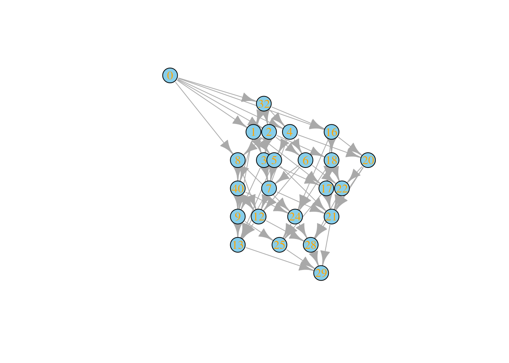
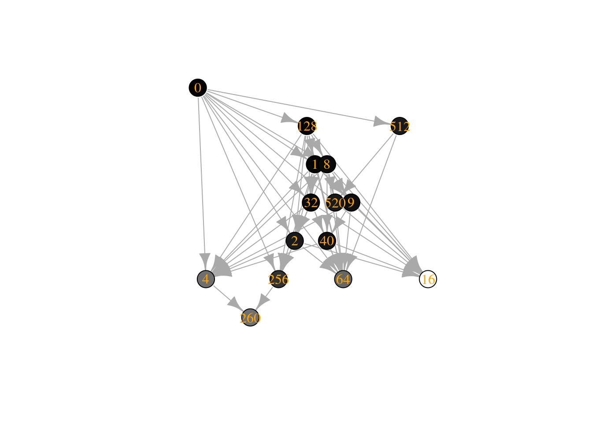

Lecture 1 Models for a single population
Lesson plan:
- We start by discussing what it means to solve an initial-value problem: the solution is an expression that allows us to calculate \(x(t)\) for any \(t\). A few ecologically-relevant models can be solved explicitly, for example the exponential and logistic growth models.
- Because solving differential equations is a laborious process, and in many cases writing the solution is impossible, or does not give us any insight on the dynamics, we introduce a graphical method that allows us to effortlessly sketch the dynamics of any ODE (i.e., models with a single equation).
- This allows us to introduce essential concepts such as the notion of an equilibrium and its stability.
- We show that determining stability using this graphical method is equivalent to performing stability analysis via linearization around an equilibrium, a method that will be extended to systems of multiple ODEs in the next chapter.
- We briefly discuss the idea of bifurcation points — i.e., particular choices of parameters for which the dynamics of the system changes qualitatively.
- We conclude by introducing the idea of Lyapunov functions, allowing us to determine global stability of an equilibrium without the need to explicitly solve the model. We will see several of these functions when we study larger systems.
1.1 Types of dynamical systems
Dynamical systems describe the change of certain variables, typically in time, space or a combination of the two. They have found applications in all scientific disciplines, and were introduced in ecology and evolutionary biology at the beginning of the twentieth century.
Broadly, dynamical systems can be divided into continuous (described by differential equations), and discrete (described by maps, or difference equations) models. Many models for population dynamics can be written as (systems of) first-order ordinary differential equations, i.e., equations containing functions of one (or more) independent variables and their first derivative (typically, with respect to time).
Ordinary means we are not dealing with partial differential equations (PDEs, used in ecology for example for reaction-diffusion equations, or spatial models). First-order, means that they contain only the first derivative with respect to time. Here we will concentrate on autonomous systems, meaning that they are time-invariant (i.e., the coefficients do not change in time). We can write these systems as:
\[ \dfrac{d x(t)}{d t} = \dot{x}(t) = f(x(t)) \]
In general, we will examine cases in which \(f(x(t))\) is a nonlinear function of \(x(t)\). We typically deal with deterministic systems, in which randomness plays no role in determining future states. Stochastic differential equations (SDEs), on the other hand, include random components.
Higher-order ODEs
Differential equations containing higher-order derivatives can be re-written as a system of first-order differential equations.
For example, consider:
\[ \frac{d^2 x(t)}{d t^2} = \alpha + \beta x(t) + \gamma \frac{d x(t)}{d t} \]
which we can rewrite more compactly as:
\[ \ddot{x} = \alpha + \beta x + \gamma \dot{x} \]
define the variables:
\[ \begin{aligned} y_1 = x\\ y_2 = \dot{x} \end{aligned} \]
thus, \(\dot{y}_1 = \dot{x} = y_2\), and \(\dot{y_2} = \ddot{x}\); we obtain:
\[ \begin{cases} \dot{y}_1 = y_2\\ \dot{y}_2 = \alpha + \beta y_1 + \gamma y_2 \end{cases} \]
which is equivalent to the original equation.
1.2 Initial-value problems
Typically, we would like to track the dynamics of a population in time, starting from known initial conditions. For example,
\[ \dfrac{d x(t)}{d t} = f(x(t)), \;\; x(0) = x_0 \]
where the independent variable \(t\) denotes time, and is considered non-negative. The vector \(x(t)\) tracks the abundance or density of the populations at time \(t\), \(x(t) \in \mathbb{R}^n\), and the function \(f\) models the evolution of the system, mapping \(\mathbb{R}^n \to \mathbb{R}^n\). The vector \(x_0 = x(0) \in \mathbb{R}^n\) marks the initial condition of the system.
The simplest and most common case in ecology is that in which \(f\) is (infinitely) many times continuously differentiable, a.k.a. smooth. If this is the case, then the solution \(x(t)\) exists and is unique.
In ecological models, dynamics are invariant with respect to the non-negative orthant \(\mathbb{R}^n_{0+}\), i.e., the vector \(x(t)\) remains non-negative whenever initialized at non-negative initial conditions \(x_0 \in \mathbb{R}^n_{0+}\).
We can solve the (system of) ODE(s) if we can write an explicit equation for \(x(t)\) given the parameters and the initial conditions.
In practice, we rarely can solve the equations we’re interested in. We can however prove that, if \(f(x(t))\) is sufficiently well-behaved (technically, if \(f(x)\) is Lipschitz continuous, for example, if it has bounded derivatives), then the initial-value problem above has a solution, the solution is unique, and depends continuously on the initial conditions and the parameters. This means that if we start the system at any point \(x(t)= x_t\), we cannot have multiple trajectories intersecting.
1.3 Solvable model: Exponential growth
History: Pierre-François Verhulst (1804-1849)

Pierre-François Verhulst was born in 1804 in Brussels, Belgium. In 1835, he became professor of mathematics at the newly-instituted Free University of Brussels.
In 1838, inspired by the work of Malthus and Quetelet, he wrote a Note on the law of population growth, where he argued that the geometric progression imagined by Malthus would be unfeasible to sustain. He therefore introduced an unknown function that would slow down growth for large populations: “The simplest hypothesis one can make on the form of this function is to suppose that” the unknown function would be quadratic in the size of the population. He went on to solve what is now known as the logistic growth model, and contrasted it with data for the growth of populations in various countries.
A model of ecological interest that has an explicit solution is that for the exponential growth:
\[ \dfrac{d x(t)}{dt} = \rho \, x(t), \;\; x(0) = x_0 \]
This is a separable differential equation, meaning that we can formally write:
\[ \dfrac{1}{x(t)} dx(t) = \rho\, dt \]
Integrate both sides (the left hand side in \(d x(t)\), the r.h.s. in \(dt\)):
\[ \begin{aligned} \int \dfrac{1}{x(t)} d x(t) = \rho \int dt \end{aligned} \]
Obtaining (\(C_i\) are constants of integration):
\[ \begin{aligned} \log x(t) + C_1= \rho\, t + C_2\\ \log x(t) = \rho\, t + C_3\\ x(t) = e^{\rho\,t + C_3}\\ x(t) = C_4 e^{\rho\, t} \end{aligned} \]
Substituting the initial condition \(x(0) = x_0\) we find that \(C_4 = x_0\):
\[ x(t) = x_0 e^{\rho\, t} \]
which is our solution. If we know the value of \(\rho\) and the initial density \(x_0\), we can compute the population density \(x(t)\) for any \(t\).
1.4 Solvable model: Logistic growth
Another model that can be solved explicitly is that of the logistic growth:
\[ \dfrac{d x(t)}{dt} = \rho\, x(t) (1 - \alpha\, x(t)), \;\; x(0) = x_0 \]
again, we can separate the equation:
\[ \dfrac{1}{x(t) (1 - \alpha\, x(t))} d x(t) = \rho\, dt \]
the r.h.s. is trivial to integrate, but the l.h.s. is trickier. We can transform it into a simpler expression by using partial fractions. We want to write:
\[ \dfrac{1}{x(t) (1 - \alpha\, x(t))} = \dfrac{A}{x(t)} + \dfrac{B}{1 - \alpha\, x(t)} \]
where \(A\) and \(B\) are appropriate constants. Multiplying both sides by \(x(t) (1 - \alpha\, x(t))\), we obtain:
\[ 1 = A (1 - \alpha\, x(t)) + B \, x(t) = A + x(t)\, (B - A\, \alpha) \]
The l.h.s. does not contain \(x(t)\), and therefore we want to set \(x(t)\, (B - A\, \alpha) = 0\), choosing \(B = A\, \alpha\), and therefore \(A = 1\). We can integrate the simpler form:
\[ \int \dfrac{1}{x(t)} \,d x(t) + \int \dfrac{\alpha}{(1 - \alpha\, x(t))}\, d x(t) = \rho\, dt \]
obtaining:
\[ \begin{aligned} \log x(t) - \log (1 - \alpha\, x(t)) = \rho\, t + C_1\\ \log \dfrac{x(t)}{1 - \alpha\, x(t)} = \rho\, t + C_1\\ \dfrac{x(t)}{1 - \alpha\, x(t)} = e^{\rho\, t + C_1}\\ x(t) = \dfrac{e^{\rho\, t + C_1}}{1 + \alpha\, e^{\rho\, t + C_1}}\\ x(t) = \dfrac{1}{\alpha + e^{-(\rho\, t + C_1)}} \end{aligned} \]
To find the value of \(C_1\), substitute the initial condition \(x(0) = x_0\), and solve for \(C_1\):
\[ \begin{aligned} x_0 = \dfrac{1}{\alpha + e^{-C_1}}\\ C_1 = \log \dfrac{x_0}{1 - \alpha \, x_0} \end{aligned} \]
Finally, substituting, we find:
\[ x(t) = \dfrac{x_0 \, e^{\rho\, t}}{1 + \alpha\, x_0 \, (e^{\rho\, t} - 1)} \]
which provides an explicit solution for this (very simple) model.
Homework 1a
Sometimes the growth of bacteria is modeled using the Gompertz model:
\[ \dfrac{d x(t)}{dt} = \alpha\, x(t) \log\left(\frac{\kappa}{x(t)}\right) \]
where \(\alpha\) and \(\kappa\) are positive parameters. Solve the model for initial condition \(x(0) = x_0\).
Simulate the growth when \(\kappa = 10\) and \(\alpha = 1\), with starting conditions \(x(0) = 20\) and \(x(0) = 0.1\).
1.5 Qualitative analysis of models for a single population
Because in general we cannot write an explicit solution for our models of interest, we attempt a qualitative analysis by: a) finding fixed points (equilibria); b) providing a qualitative description of the dynamics; c) probing the stability of fixed points; d) gaining an understanding of the system (nature of attractors, changes of behavior for different parameters) without deriving an explicit solution.
When we are dealing with a single population, we can use a graphical method. Simply, plot \(dx(t) /dt\) against \(x(t)\). We think of \(x(t)\) as moving along the \(x\) axis, at a velocity determined by the \(y\) coordinate. For the exponential growth function:
\[ \dfrac{d x(t)}{dt} = \rho \, x(t) \]
the graph becomes:

The only point where the curve intercepts the \(x\) axis is \(x^\star = 0\). A point \(x^\star\) for which \(\left . \dfrac{d x(t)}{dt} \right|_{x^\star} = 0\) is an equilibrium (or fixed-point) for the system, meaning that if we initialize the system at \(x^\star\), it will remain there unless perturbed. Whenever we apply a (small) perturbation to a stable equilibrium, the system returns to it; when we perturb an unstable equilibrium, on the other hand, the system moves away from it.
Now think of a perturbation: if we were to perturb \(x^\star = 0\) by introducing a few individuals, we would find that the population starts growing (i.e., \(dx(t) / dt > 0\)), meaning that the equilibrium is unstable. Thus, using the graphical method introduced above, we can easily identify equilibria (i.e., points where the curve intercepts the x-axis), and their stability (i.e., by determining whether the curve around the equilibrium is above or below \(d x(t)/dt = 0\)).
Next, let’s consider the logistic growth equation:
\[ \dfrac{d x(t)}{dt} = \rho\, x(t) (1 - \alpha\, x(t)) =\rho\, x(t) - \rho\, \alpha\,x(t)^2 \]
We can draw the graph (note the quadratic term—we’re describing a parabola):

Now we have two equilibria, at \(x^\star = 0\) and \(x^\star = 1 / \alpha\). If we perturb \(x^\star = 0\), the system moves away from it (unstable), while if we perturb \(x^\star = 1 / \alpha\) the system goes back to it (stable).
History: Warder Clyde Allee (1885-1955)

Born in Indiana, Allee received his PhD in 1912 from the University of Chicago, where he returned in 1921. He was the Dean in the College of Arts, Literature, and Science (1924-1926) and Secretary of the Department of Zoology (1927-1934). In 1935, a spinal tumor left him paralyzed from the waist down. This did not slow down his hectic schedule of teaching, researching and writing. He stayed at U. Chicago until his retirement (1950). Allee is also remembered as a pacifist (he was raised a Quaker) and an activist.
He performed a series of studies on animal aggregation, finding that goldfish growing in a tank laced with colloidal silver would grow faster when more individuals were present. Today, the Allee effect applies to any population that grows faster when a certain threshold population is surpassed.
Now a more complex model, in which the population experiences an Allee effect:
\[ \dfrac{d x(t)}{dt} = \rho\, x(t) (x(t) - \gamma) (1 - \alpha\, x(t)) \]
where \(0 < \gamma < 1 / \alpha\). Plotting,

In this model, there are two stable equilibria (\(x^\star = 0\) and \(x^\star = 1 / \alpha\)), separated by an unstable equilibrium (\(x^\star= \gamma\)). Depending on the initial conditions, we might end up in either of the stable equilibria—we call this situation bistability.
Note that bistability makes it clear that we can only apply small perturbations to the equilibrium to probe its “local” stability—for example, imagine being at \(x^\star = 1 / \alpha\) and perturbing the population by bringing it below \(\gamma\); then we would find that the population goes extinct, suggesting that \(x^\star = 1 / \alpha\) is “somewhat unstable”.
1.5.1 Stability using derivatives
You might have noticed in the previous graphs that whenever the curve \(dx(t) /dt\) is negative on the left of a point and positive on its right we find that the point is unstable, while, conversely, a point for which \(dx(t) /dt\) is positive on the left and negative on the right is stable. We can formalize this by taking the derivative of \(dx(t) /d t\) with respect to \(x(t)\), and evaluating this function at different equilibria.
For example, for the exponential growth model, we have:
\[ \dfrac{\partial}{\partial x} \dfrac{dx}{dt} = \dfrac{\partial f(x)}{\partial x} = \dfrac{\partial (\rho x)}{\partial x} = \rho \]
This is always positive when \(\rho > 0\), and as such the only equilibrium (\(x^\star = 0\)) is unstable.
For the logistic growth, we find:
\[ \dfrac{\partial f(x)}{\partial x} = \dfrac{\partial (\rho\, x - \rho\, \alpha\, x^2)}{\partial x} = \rho - 2 \rho\, \alpha\, x \]
When we evaluate this function at the equilibrium \(x^\star = 0\), we obtain \(\rho > 0\), and as such the equilibrium is unstable. Conversely, when we evaluate the function at \(x^\star = 1 / \alpha\), we obtain \(\rho - 2 \rho = -\rho\), and therefore the equilibrium is stable.
Finally, for the model with Allee effect, we have:
\[ \dfrac{\partial (\rho\, x (x-\gamma)(1-\alpha\, x))}{\partial x} = - \rho\, \gamma + 2 \rho\, x(1 + \alpha) - 3 \rho\, \alpha\, x^2 \]
At \(x^\star = 0\), we find \(-\rho\, \gamma\) which is always negative, and as such \(x^\star = 0\) is stable. At \(x^\star = \gamma\) we have \(\rho\, \gamma\, (1- \gamma\, \alpha)\) which is positive (as \(\gamma\, \alpha < 1\)) and as such is an unstable equilibrium. Finally, for \(x^\star = 1/\alpha\), we have \(\rho (\gamma - 1/\alpha)\) which is always negative.
1.5.2 What are we doing when probing stability using derivatives?
More formally, we can think of describing the dynamics of a perturbation around the equilibrium. Write \(\Delta x(t) = x(t) - x^\star\) for the perturbation, and approximate its dynamics around the equilibrium. We want to write the dynamics of \(\Delta x(t)\). By chain rule, \(\frac{d \Delta x(t)}{dt} = \frac{d \Delta x(t)}{d x(t)} \frac{d x(t)}{dt}\), and as such
\[ \frac{d \Delta x(t)}{dt} = f(x(t)) = f(\Delta x(t) + x^\star) \]
In general, we are left with a problem that is as difficult as the one we had originally; however, if we are willing to consider infinitesimally small perturbations, we can Taylor expand around \(x^\star\), and approximate the dynamics of the perturbation:
\[ f(\Delta x(t) + x^\star) = f(x^\star) + \left . \frac{df(x)}{dx} \right |_{x^\star} \Delta x(t) + \frac{1}{2}\left . \frac{d^2 f(x)}{dx^2} \right |_{x^\star} (\Delta x(t))^2 + \ldots \]
Taking only the linear term, and noticing that \(f(x^\star) = 0\) by definition, we have:
\[ \frac{d \Delta x(t)}{dt} \approx \left . \frac{d f(x)}{dx} \right |_{x^\star} \Delta x(t) = \rho\, \Delta x(t) \]
which is the equation for the exponential growth we have seen above. If \(\left . \frac{d f(x)}{d x}\right |_{x^\star} < 0\) the perturbation \(\Delta x(t)\) will die out, while if it is positive it will increase quickly. Note that the analysis is valid only in the immediate surroundings of \(x^\star\)—i.e., only where the terms we have neglected are indeed negligible.
1.6 Bifurcations
The shape of the graphs above might depend on the value of parameters. Whenever a small change in one or several parameters causes a qualitative change in the behavior of the system, we speak of a bifurcation point (the term “bifurcation” was introduced by Henri Poincaré in 1885). At a bifurcation point, equilibria could disappear or be created, change their stability, the system could start cycling, etc.
In low-dimensional system, there are a variety of different behaviors, each of which has its own name (e.g., saddle-node, pitchfork, transcritical, Hopf, period-doubling, …, bifurcation). The codimension of a bifurcation is the number of parameters we need to change to alter the behavior of the system. Clearly, codimension-1 and -2 bifurcations are the simplest and most studied.
Here we just show the main idea using a simple example. For a detailed and accessible introduction, see Strogatz (2018) and Seydel (2009).
Consider the model:
\[ \dfrac{d x}{dt} = \rho + x^2 \]
The equilibria of the system, when they exist, are given by \(x^\star = \pm \sqrt{-\rho}\). It is clear that, when \(\rho < 0\) we will have two equilibria, when \(\rho = 0\) a single equilibrium \(x^\star = 0\), and that when \(\rho > 0\) no (real) equilibrium exists. As such, the shape of the diagrams we have sketched above depend on \(\rho\). For example, when \(\rho = -4\), we have:
The equilibrium on the left is stable, while the one on the right is unstable. The graph is qualitatively the same for any \(\rho < 0\). When \(\rho = 0\), however, the two equilibria “collide”, and merge into the single “half-stable” equilibrium:

The equilibrium \(x^\star = 0\) is stable if we approach it from the left, while unstable if we are reaching it from the right. When we cross the bifurcation \(\rho_c = 0\), the equilibrium disappears altogether, leading to unbounded growth:

We can summarize the behavior of the system for different values of \(\rho\) in a bifurcation diagram: on the x-axis we have the parameter we are varying (in this case, \(\rho\)), and on the y-axis we report \(x(t)\), marking the position of all the equilibria, with a solid line indicating stable equilibria and a dashed line the unstable ones:
Note that the rate at which the system approaches (moves away from) the stable (unstable) equilibrium depends on \(\rho\). When \(\rho \ll 0\) the system moves fast, while when \(\rho \to \rho_c = 0\) the system moves more slowly. This phenomenon is called “critical slowing down” and has been proposed as a generic indicator that a system is approaching a bifurcation point.
Key paper: Ludwig et al. (1978)
Models for population dynamics have been used to understand insect outbreaks, for example the eastern spruce budworm (Choristoneura fumiferana), which is responsible for defoliation of forests in North America.
Ludwig et al. developed a model for the dynamics of the insect population, and performed a bifurcation analysis to understand the two regimes of either low-abundance of the insect, or massive outbreaks.
Homework 1b
The goal is to produce a bifurcation diagram for the dynamics of the spruce budworm, as detailed in the paper by Ludwig et al.. A nondimensional version of the model can be written as:
\[ \dfrac{d x}{dt} = \rho x \left(1 - \frac{x}{\mu}\right) - \dfrac{x^2}{1 + x^2} \]
where \(\rho\) and \(\mu\) are positive parameters. Depending on the values of the parameters, the model can have between one and three equilibria. The value of \(\rho\) is equivalent to a growth rate, and measures how favorable is the environment for the growth of the insect population; the parameter \(\mu\) limits the population size.
To find the equilibria, you need to find values of \(x > 0\) such that:
\[ \rho \left(1 - \frac{x}{\mu}\right) = \dfrac{x}{1 + x^2} \] or, equivalently,
\[ -\dfrac{\rho}{\mu}x^3 + \rho x^2 -\left(1+ \frac{\rho}{\mu} \right)x + \rho = 0 \]
The goal is to produce a bifurcation for the budworm model: assume that \(\mu = 10\), and vary \(\rho\) between \(0.3\) and \(0.6\) in steps of \(10^{-3}\). For each value of \(\rho\), solve the equation above to find the equilibria; an equilibrium is feasible only if it is real (consider values for which the imaginary part is less than \(10^{-6}\) to be real, to account for the numerical error when computing the roots) and positive.
To compute the roots in R, you can use the function polyroot; for example:
get_roots <- function(rho, mu) {
# roots of the polynomial
# c0 + c1 x + c2 x^2 + c3 x^3 = 0
c3 <- -rho / mu
c2 <- rho
c1 <- -1 - rho / mu
c0 <- rho
polyroot(c(c0, c1, c2, c3))
}Plot \(\rho\) on the x-axis and on the y-axis the value of the roots (use a different color for each of the three possible roots). You should observe three regimes: when \(\rho\) is small (for example, at \(\rho = 0.35\)) there is only an equilibrium, in which the population is at low abundance; for intermediate values (for example, \(\rho = 0.45\)), you should find three equilibria; finally, for large values of \(\rho\) (e.g., \(\rho = 0.6\)), you should find a single equilibrium in which the population is at high abundance (“outbreak”).
Next, set \(\mu = 10\) and \(\rho = 0.45\). Plot \(dx/dt\) against \(x\) and classify the stability of the three equilibria.
A few interesting references on detecting the approaching of a bifurcation in experimental systems:
Key paper: Scheffer et al. (2009)
Starting in the early 2000s, much work went into trying to anticipate dramatic changes in natural and man-made systems (e.g., lakes turning eutrophic, fisheries collapsing, desertification). In this review, Scheffer et al. summarize previous work and present an accessible introduction to the problem.
Key paper: Dai et al. (2012)
Dai et al. grew populations of Saccharomyces cerevisiae on sucrose. Because sucrose is split outside the cell, it creates an Allee effect: when the population density is high, it is energetically convenient to produce the enzyme to spit the sucrose, as the different cells pool their efforts; when population density is low, the gain is not sufficient to balance the cost. By tuning the mortality (dilution), they were able to experimentally recreate the bifurcation diagram of the exercise above. The data from the experiments are here.
1.7 Long term behavior of 1-D systems
First-order, single-equation ODEs can produce a very limited variety of long-terms behaviors: for \(t \to \infty\) we can only have \(x(t) \to \pm \infty\) or \(x(t) \to x^\star\). For population models, this means that either growth is unbounded (e.g., exponential growth model), or the population will reach an equilibrium point (possibly, out of many).
This is a direct consequence of the uniqueness of trajectories: because we are moving in a 1-dimensional space, the fact that trajectories cannot cross means that if we are at a certain point \(x(t) = x_t\), then either \(dx(t)/dt >0\), \(dx(t)/dt <0\), or \(dx(t)/dt =0\), but can take only one value, preventing more complex behaviors such as cycles or chaos.
For smooth functions and autonomous systems, one needs at least two equations to produce cycles and three equations to produce chaos. This is in stark contrast with difference equations—a single, innocent-looking difference equation can give rise to all sorts of dynamics.
Key paper: May (1976)
May took a possible model for the logistic growth in discrete time, and showed how this very simple model can give rise to equilibria, cycles and chaos. This is one of the papers that launched an all-out effort to explore chaotic dynamics that lasted for the best part of the 1980s.
1.8 Lyapunov functions
While in many cases we cannot write an explicit solution for a (system of) differential equation(s), we might be able to determine the stability of equilibria and their basin of attraction (i.e., the set of initial conditions eventually leading to the equilibrium \(x^\star\)) by considering functions that change monotonically through the dynamics.
Suppose that \(\dfrac{d x(t)}{dt} =f(x(t))\), and that \(x^\star\) is an equilibrium. Let \(V(x)\) be a function defined in an open set \(\mathcal O\) containing \(x^\star\), such that a) \(V(x^\star) = 0\) and \(V(x) > 0\) for any \(x \in \mathcal O, x \neq x^\star\), and b) \(d V /dt \leq 0\) for all \(x \in \mathcal O \neq x^\star\). Then \(V\) is a Lyapunov function for the model, and \(x^\star\) is stable. The Lyapunov function is called strict, and the equilibrium \(x^\star\) asymptotically stable if \(d V /dt < 0\) for all \(x \neq x^\star\) (i.e., all trajectories starting in \(\mathcal O\) will eventually reach \(x^\star\)).
While Lyapunov functions are great, because we can prove stability without the need to solve the system, there is no general rule to construct them. Often, “candidate” Lyapunov functions are available, but the process of finding the right function typically requires a lot of ingenuity and trial and errors.
Fortunately, for system with a single state a quadratic function is guaranteed to solve the problem. Take the model for logistic growth (with \(\rho > 0\) and \(\alpha > 0\)), and the candidate Lyapunov function:
\[ V(x(t)) = (x(t) - x^\star)^2 \]
with \(x^\star = 1 / \alpha\). The function is positive for any \(x(t) \neq x^\star\). Next, we derive with respect to \(t\):
\[ \dfrac{d V(x(t))}{d t} = \dfrac{d V(x(t))}{d x(t)}\dfrac{d x(t)}{d t} = 2 \left(x(t) - \dfrac{1}{\alpha}\right)\rho\, x(t) (1 - \alpha\, x(t)) \]
The derivative is negative whenever \(x(t) > 0\) and \(x(t) \neq x^\star\):
\[ \dfrac{d V(x(t))}{d t} = 2 \rho\, x(t) \left(x(t) - \dfrac{1}{\alpha}\right) (1 - \alpha\, x(t))= -\dfrac{\rho\, x(t)}{\alpha}\left(x(t) - \dfrac{1}{\alpha}\right)^2 \]
and as such \(x^\star\) is asymptotically stable. The basin of attraction (i.e., where the Lyapunov function has the desired properties) is \(x \in \mathbb{R}_+\). There can be several alternative Lyapunov functions.
A classic candidate Lyapunov function for the Lotka-Volterra model we are going to see many times in the lecture notes starts from a logarithmic inequality: if \(y>0\), then \(\log y \leq y- 1\), and thus \(y - 1 -\log y \geq 0\). Take \(y = \frac{x}{x^\star}\), with \(x\) and \(x^\star\) positive. Then,
\[ \frac{x}{x^\star} - 1 - \log \frac{x}{x^\star} \geq 0 \]
Now multiply by \(x^\star\), obtaining:
\[ x - x^\star - \log x^\star \frac{x}{x^\star} \geq 0 \]
We can use this as our Lyapunov function for the logistic growth model:
\[ V(x(t)) = x(t) - x^\star - x^\star \log \dfrac{x(t)}{x^\star} \]
which is positive for \(x(t) > 0\) and \(x(t) \neq x^\star\), taking the derivative w.r.t. time, we find:
\[ \dfrac{d V(x(t))}{d t} = \left(1 - \dfrac{x^\star}{x(t)}\right)\rho\, x(t) (1 - \alpha\, x(t)) = -\rho\, x^\star (x(t) - x^\star)^2 \]
which again is negative whenever \(x^\star > 0\), \(\rho >0\) and \(x(t) \neq x^\star\).